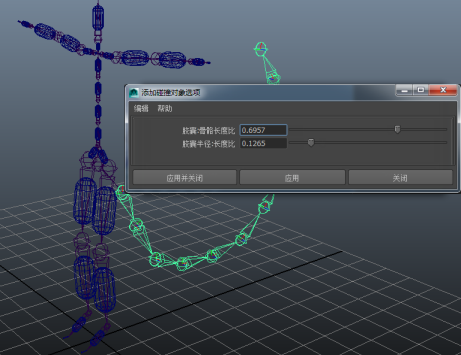

如果您将额外关节添加到布偶骨架，并要将其纳入布偶解算中，请使用
“Bullet”菜单中的
“将碰撞对象添加到骨架”(Add Colliders to Skeleton)选项。
注： Bullet 布偶不支持收拢原始骨架。
使用以下步骤可以将运动学刚体添加到骨架：
- 选择已添加到骨架的骨架关节。不要选择已有碰撞对象的骨架部分。
- 选择“Bullet > 将碰撞对象添加到骨架”(Bullet > Add Colliders to Skeleton)。
该工具可检查起始于当前选定关节的关节层次，并围绕每个骨骼创建一个胶囊。这些胶囊跟随骨架的动画，并与动力学 Bullet 对象发生碰撞。
注： 动力学对象不影响角色动画。其交互仅影响动力学对象。
注： 您可以通过“添加碰撞对象选项”(Add Colliders Options)窗口（“Bullet > 将碰撞对象添加到骨架”(Bullet > Add Colliders to Skeleton)）调整胶囊生成过程。
- 调整以下选项：
-
胶囊：骨骼长度比(Capsule: Bone Length Ratio)
- 允许您控制胶囊覆盖每个骨骼的程度。减小此值可以减少关节处的胶囊之间重叠的量。
-
胶囊半径：长度比(Capsule Radius: Length Ratio)
- 允许您控制相对于骨骼长度的胶囊宽度。
有关如何创建布偶解算的说明，请参见创建 Bullet 布偶。